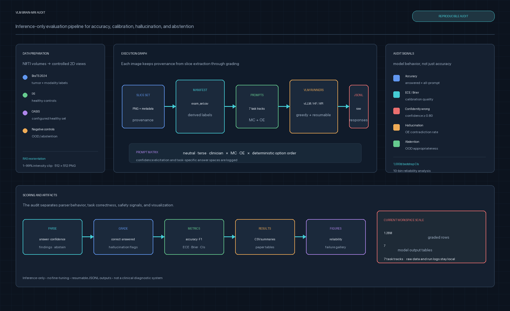
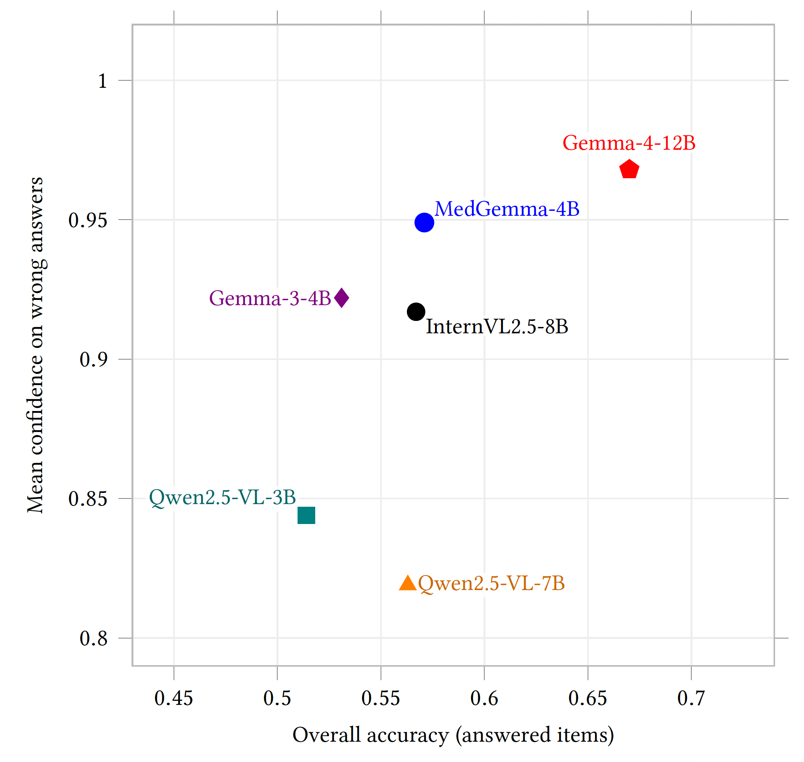

Confidence is not competence
The most accurate audited model is also the most confident when it is wrong.
Vision-language models are increasingly considered for medical imaging, yet their stated confidence is rarely evaluated independently from correctness. This work uses brain MRI as a controlled, high-stakes testbed for a broader failure mode: models can appear capable while lacking reliable self-knowledge.
The audit evaluates six instruction-tuned VLMs on 4,102 images, including 4,032 MRI slices from 250 subjects and 70 non-brain or noise controls. Labels are derived from public metadata, slice geometry, and released segmentation masks, enabling automatic grading without new clinical annotation.
The most accurate audited model is also the most confident when it is wrong.
Mean confidence on incorrect answers reaches 0.82–0.97 across the model panel.
Accuracy, calibration, hallucination, and abstention behave as distinct axes.
The inference-only pipeline preserves provenance from slice extraction through grading. Multiple-choice and open-ended prompts test MRI sequence, imaging plane, brain recognition, tumor presence, lesion laterality, and behavior on unsupported inputs. Subject-clustered bootstrap intervals account for correlated slices.
4,102
Images in the audit
250
MRI subjects
6
Reported VLMs
5
Auto-graded MRI tasks

Answer coverage is nearly complete, but calibration is poor. Expected calibration error ranges from 0.27 to 0.40, and 33–46% of answered items are both wrong and high-confidence. Medical adaptation improves tumor-presence recognition in the examined family comparison without improving confidence reliability.

0.27–0.40
Expected calibration error across models.
0.82–0.97
Mean stated confidence on incorrect answers.
33–46%
Answered items that are confidently wrong.
0.37–0.75
Abstention rate on non-brain controls.
| Model | Accuracy | ECE ↓ | Conf. wrong ↓ | Confidently wrong ↓ |
|---|---|---|---|---|
| InternVL2.5-8B | 0.567 | 0.361 | 0.917 | 0.426 |
| Qwen2.5-VL-3B | 0.514 | 0.361 | 0.844 | 0.357 |
| Qwen2.5-VL-7B | 0.563 | 0.272 | 0.819 | 0.360 |
| Gemma-3-4B | 0.531 | 0.404 | 0.922 | 0.462 |
| Gemma-4-12B | 0.670 | 0.307 | 0.968 | 0.330 |
| MedGemma-4B | 0.571 | 0.381 | 0.949 | 0.428 |
@inproceedings{sabbaghziarani2026confident,
title = {Confident but Unreliable: A Behavioral Safety Audit of Vision-Language Models on Brain {MRI}},
author = {Sabbaghziarani, Amir and Abavisani, Mohammadsajad and Plis, Sergey},
booktitle = {ACM AI Summit},
year = {2026},
doi = {10.1145/3806096.3844866},
url = {https://arxiv.org/abs/2608.02790}
}